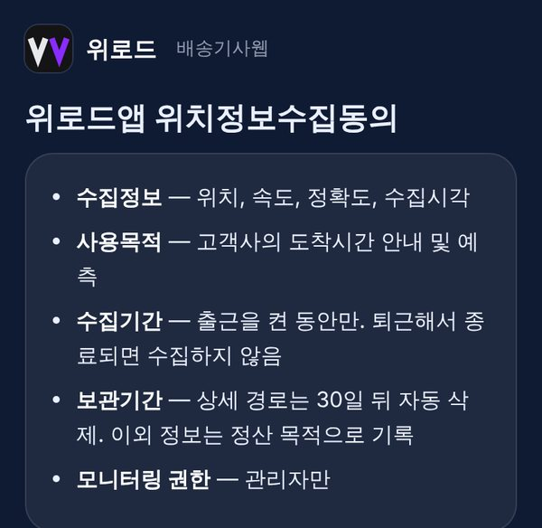
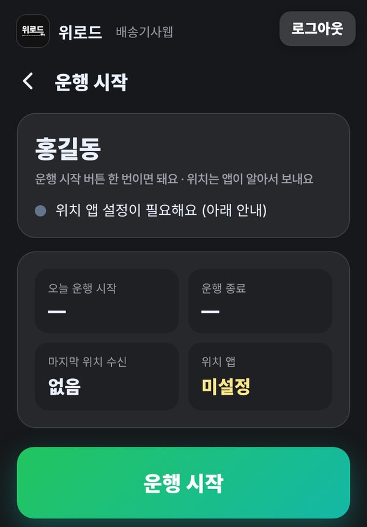
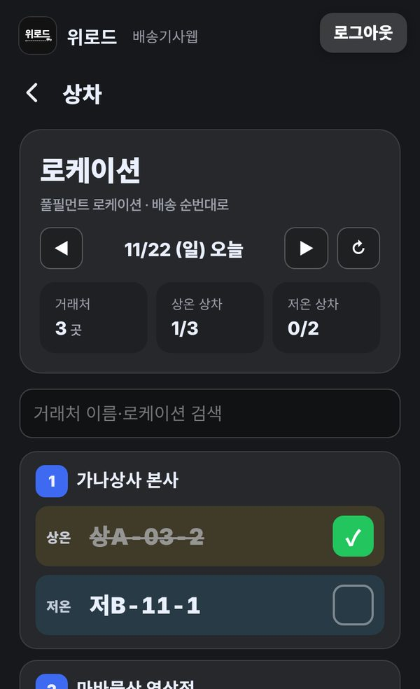
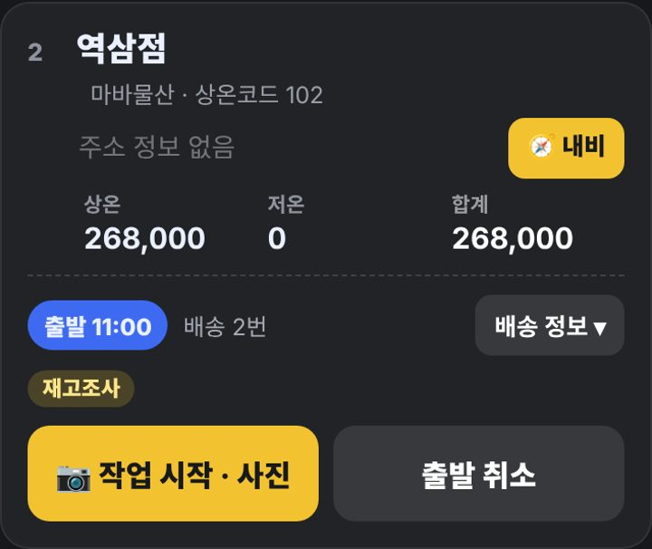
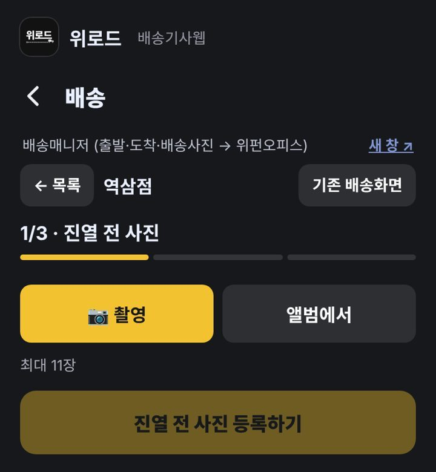

위치는 운행 시작을 누른 동안에만 모아요. 상세 경로는 30일 뒤 자동 삭제
로그인하면 바로 차례로 물어봐요. 모두 허용만 누르면 돼요 (화면을 꺼도 위치가 가게 하려고요).
아래 하루 순서대로 쓰면 돼요. 앱 업데이트는 따로 안 해도 돼요 (새 버전이 나오면 화면 아래 [업데이트]를 누르면 끝). 사진 촬영이 안 될 때만 1번 버튼으로 다시 내려받아 덮어 설치하세요 (로그인 유지).
버튼을 누르면 Traccar 앱이 열리면서 식별자·서버주소·전송 간격이 전부 들어가요. "열기" 물으면 열기.
PC 화면이면 → Traccar 설정 화면 오른쪽 위 QR 아이콘으로 이 코드를 찍어도 돼요
앱 열고 설정 변경 누른 뒤 아래 값을 넣어요.
본인 이름 (위펀오피스 등록 이름, 띄어쓰기 없이)https://ridvdsluzfjxonqlavgm.supabase.co/functions/v1/loc높음10060300



| 요약카드 확인 (필수) | 물류팀이 주의사항을 적어 둔 곳. 카드를 열어 읽어야 출발 버튼이 나와요 |
| 첫 배송 | 처음 가는 곳. 주소·출입 방법·진열 위치 먼저 확인 |
| 담당 변경 | 평소 다른 기사님 담당. 진열 위치 확인 |
| 최근 VOC | 30일 안 고객 불만이 있던 곳. 같은 실수 주의 |
| 혼동 주의 | 같은 건물 같은 층에 다른 회사 거래처. 상호·호수 꼭 확인 |
| 냉동 | 냉동 상품이 있는 날. 따로 챙기기 |
| 로케이션 없음 | 위치가 아직 입력 전인 상품. 도크장 앞 파레트 확인 |